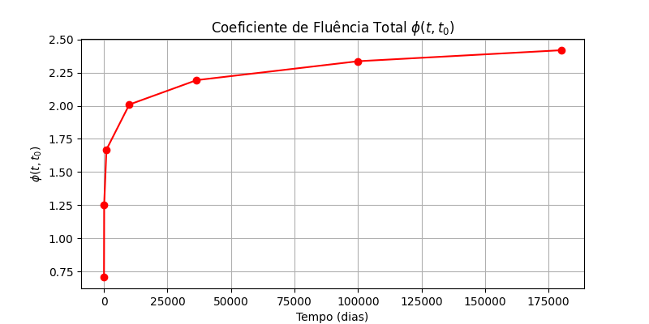

Relatório Técnico - Fluência Eurocode 2
1. Dados de Entrada
Vão Efetivo: {{ lv }} mm
Largura da Viga: {{ bw }} mm
Altura da Viga: {{ h }} mm
2. Propriedades do Material
| Propriedade | Valor |
|---|
| Tensão de Escoamento do Aço (fyk) | {{ fyk }} MPa |
| Módulo de Elasticidade do Aço (Es) | {{ Es }} GPa |
| Coeficiente de Poisson do Aço (vs) | {{ vs }} |
3. Propriedades de Cálculo
| Propriedade | Valor |
|---|
| Resistência de Cálculo do Concreto (fcd) | {{ fcd }} MPa |
| Resistência de Cálculo do Aço (fyd) | {{ fyd }} MPa |
4. Cargas e Momentos
| Propriedade | Valor |
|---|
| Carga Total Combinada (qtotal) | {{ qtotal }} kN/m |
| Momento de Cálculo (Mtd) | {{ Mtd }} kN·m |
| Momento Solicitante (Msd) | {{ Msd }} kN·m |
5. Cálculo Estrutural
| Propriedade | Valor |
|---|
| Espessura Equivalente do Elemento (hn) | {{ hn }} mm |
| Raiz escolhida da Linha Neutra (xLN) | {{ xLN_value }} mm |
6. Coeficiente de Fluência Total
| Tempo (dias) | φ(t, t₀) |
|---|
{% for t, phi in zip(tempos, phi_total_values) %}
| {{ t }} | {{ phi }} |
{% endfor %}
7. Gráficos

8. Conclusão
O coeficiente de fluência total varia conforme o tempo, conforme os cálculos realizados.